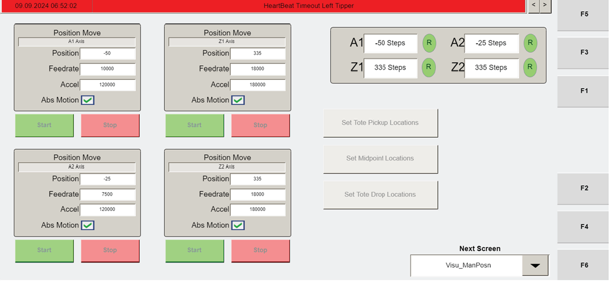

| Procedure ID | proc_interpret_visu_mds_machine_data_ids_and_expected_uniqueness_v1 |
|---|---|
| Title | Interpret VISU_MDS Machine Data IDs and Identify Which Values Are Expected to Be Unique |
| Procedure Type | reference |
| Primary Role | L1_support |
| Support Safe | Yes |
| Validation Status | needs_sme_review |
| Merge Status | source_finalized |
Use the VISU_MDS Machine Data screen and Table 4-10 to identify a machine data field by ID and determine whether the source treats that value as one that should match from machine to machine or as one of the documented unique exceptions.
Use when reviewing a value on the VISU_MDS Machine Data screen and you need to identify the field by ID and interpret whether the value is generally expected to match across machines or is documented as unique for each machine and axis.
Responsible role: L1_support
Instruction:
Open the VISU_MDS "Machine Data" screen and locate the machine data entry being reviewed by its ID number.
Expected result:
The reviewed machine data entry is visible on the VISU_MDS Machine Data screen and its ID can be read.
Screens / Images:

Stop or Escalate If:
Responsible role: L1_support
Instruction:
Use Table 4-10 to identify the meaning of the displayed ID. The source lists fields including ID 0 Axis Name, 1 OT Minus, 5 Tote Pickup Position, 6 Plus Travel Opposite Axis Position, 7 Neg Travel Opposite Axis Position, 8 Tote Dump Position, 9 Soft Travel Lim Pos, 10 OT Pos, 11 Base Speed for AutoCycle, 12 Base Acc/Dec for AutoCycle, 13 Jog Speed, 14 Jog Acceleration, 16 Tote Prox Simulation, 20 Home Position, 21 Home Offset, 22 Homing Speed, 23 Homing CAM Speed, and 24 Homing Acceleration.
Expected result:
The reviewed ID is matched to a documented field name from Table 4-10.
Screens / Images:
Stop or Escalate If:
Responsible role: L1_support
Instruction:
If the reviewed field is MD5 Tote Pickup Position or MD21 Home Offset, interpret it as unique for every machine and every axis.
Expected result:
MD5 and MD21 are recognized as unique values rather than match-across-machine values.
Screens / Images:


Stop or Escalate If:
Responsible role: L1_support
Instruction:
If the reviewed field is one of the other documented machine data values in this section, interpret it as a value that should match from machine to machine. Do not override the explicit exceptions for MD5 Tote Pickup Position and MD21 Home Offset.
Expected result:
The reviewed field is classified as a generally matching value when it is one of the documented listed values other than the two exceptions.
Screens / Images:


Stop or Escalate If:
Responsible role: L1_support
Instruction:
Record the field name and whether the source treats it as a matching value or a unique value.
Expected result:
A documented record exists showing the reviewed field name and its interpretation category.
Screens / Images:
Stop or Escalate If: